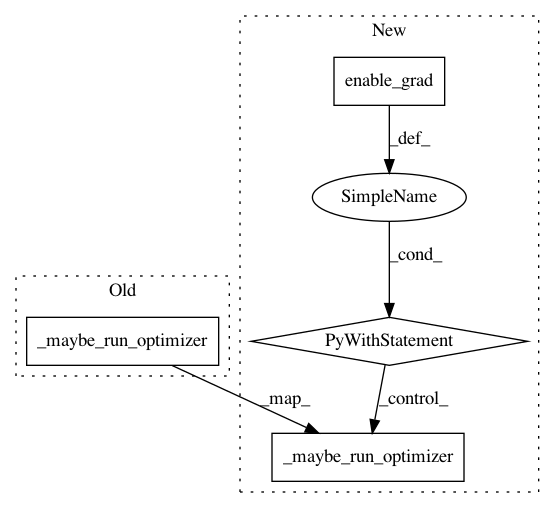

2a548989f90026395d3d47ccf15ac331728c64bf,ml/rl/training/parametric_dqn_trainer.py,ParametricDQNTrainer,train,#ParametricDQNTrainer#Any#,58
Before Change
self.loss = value_loss.detach()
value_loss.backward()
self._maybe_run_optimizer(self.q_network_optimizer, self.minibatches_per_step)
// Use the soft update rule to update target network
self._maybe_soft_update(
self.q_network, self.q_network_target, self.tau, self.minibatches_per_step
After Change
target_q_values = reward + (discount_tensor * filtered_max_q_vals)
with torch.enable_grad():
// Get Q-value of action taken
current_state_action = rlt.StateAction(
state=learning_input.state, action=learning_input.action
)
q_values = self.q_network(current_state_action).q_value
self.all_action_scores = q_values.detach()
value_loss = self.q_network_loss(q_values, target_q_values)
self.loss = value_loss.detach()
value_loss.backward()
self._maybe_run_optimizer(
self.q_network_optimizer, self.minibatches_per_step
)
// Use the soft update rule to update target network
self._maybe_soft_update(
self.q_network, self.q_network_target, self.tau, self.minibatches_per_step
)
In pattern: SUPERPATTERN
Frequency: 3
Non-data size: 4
Instances
Project Name: facebookresearch/Horizon
Commit Name: 2a548989f90026395d3d47ccf15ac331728c64bf
Time: 2019-06-22
Author: jjg@fb.com
File Name: ml/rl/training/parametric_dqn_trainer.py
Class Name: ParametricDQNTrainer
Method Name: train
Project Name: facebookresearch/Horizon
Commit Name: 2a548989f90026395d3d47ccf15ac331728c64bf
Time: 2019-06-22
Author: jjg@fb.com
File Name: ml/rl/training/dqn_trainer.py
Class Name: DQNTrainer
Method Name: calculate_cpes
Project Name: facebookresearch/Horizon
Commit Name: 2a548989f90026395d3d47ccf15ac331728c64bf
Time: 2019-06-22
Author: jjg@fb.com
File Name: ml/rl/training/sac_trainer.py
Class Name: SACTrainer
Method Name: train